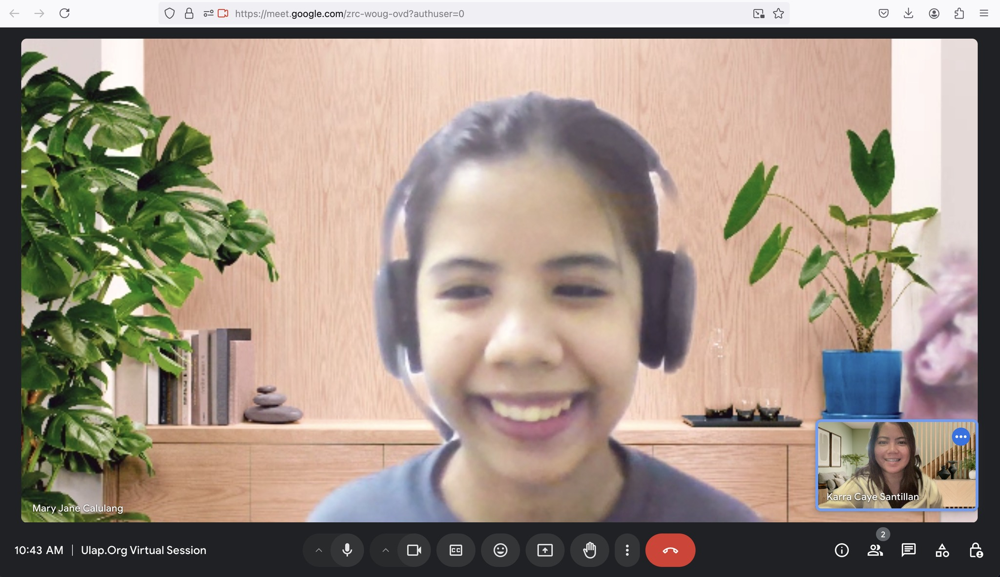
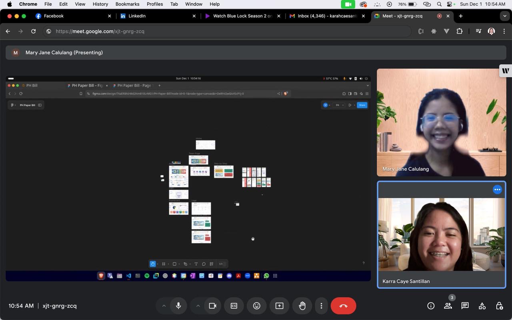
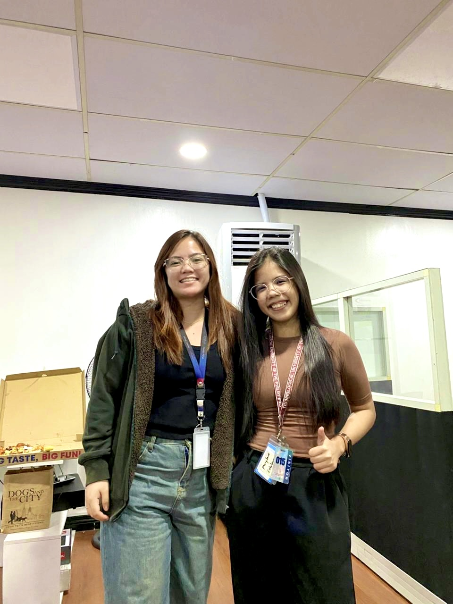

It’s amazing how fast things can change. Not long ago, I was a scholar at ULAP.org — eager to learn and deeply grateful for the mentors who guided me. Today, I’m experiencing the full-circle moment of becoming a mentor myself.

I recently met Jane, a 4th-year TUP student who dreams of entering the IT industry. While she isn’t focused on web development specifically, she has a genuine curiosity and a strong desire to explore where she truly belongs in tech.
During our conversation, I shared insights about the many career paths in the IT field — software development, cybersecurity, networking, data, QA, UI/UX, and more. We talked about the opportunities waiting for her after graduation and how she can prepare herself for the next chapter.
I also gave her advice on her thesis — how to choose a topic aligned with her strengths, how to approach her research with clarity, and how to make her project something she can proudly present and possibly use as a stepping stone in her career.

Mentorship moments like this remind me why I value giving back. Guiding someone who is just starting their journey — someone filled with curiosity, dedication, and potential — is something I deeply appreciate. As someone who once stood in her place, I’m grateful to share what I’ve learned and support her growth.
And before Jane officially graduates from ULAP.org, we finally had the chance to meet in person. It was such a meaningful moment — catching up, sharing stories, and finally seeing each other face-to-face after guiding her online. A simple but memorable reminder of how connections in mentorship can grow beyond screens.

Here’s to more learning, more conversations, and more opportunities ahead. 🤍 #ULAPOrg #Mentorship #InspireTheNext
About ULAP.org
ULAP.org — Underrepresented Youth Learning Assistance Program — is a non-profit organization dedicated to helping underserved Filipino youth gain access to opportunities in technology, cloud, and data. They offer scholarships, mentorship, training, certification support, and community events to help aspiring tech professionals start strong careers regardless of their academic background.
Visit their website: https://www.ulap.org
Leave a comment